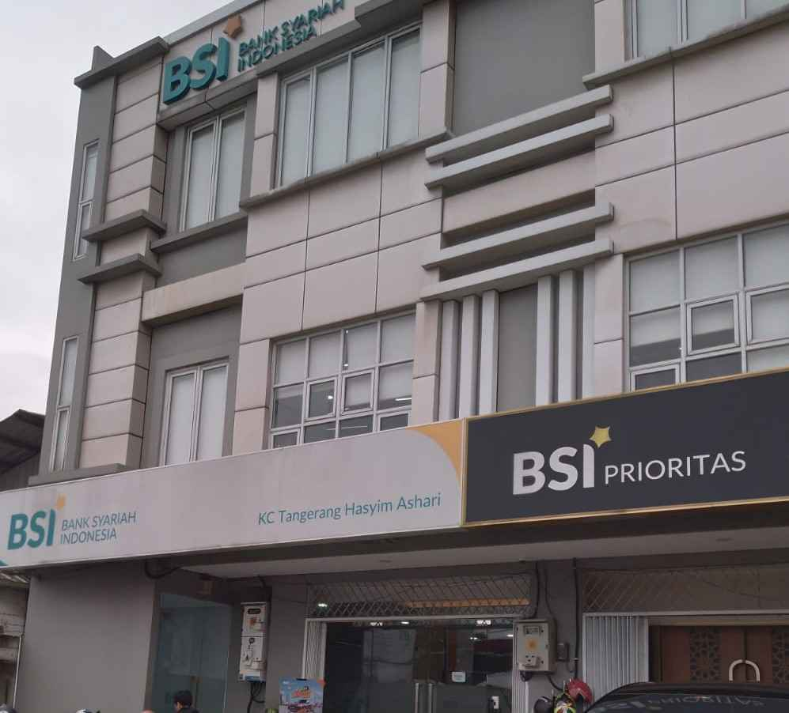

Berikut adalah struktur Kantor Cabang Hasyim Ashari Tangerang

Berikut adalah struktur organisasi yang umum dalam sebuah cabang Bank Syariah Indonesia:
- Branch Manager (Pimpinan Cabang): Bertanggung jawab atas keseluruhan kegiatan operasional dan pengembangan cabang, termasuk evaluasi kinerja pegawai serta penyelesaian permasalahan yang muncul.
- Branch Operational Service Manager: Mengawasi pelaksanaan seluruh kegiatan administrasi, memastikan ketersediaan posisi uang kas, dan mengelola operasional harian cabang.
- Operational Staff: Mengelola kegiatan internal kantor, termasuk administrasi, laporan keuangan, serta urusan utang piutang.
- Customer Service: Memberikan informasi produk, membantu nasabah dalam proses pembukaan dan penutupan rekening, serta menangani keluhan nasabah.
- Teller: Melaksanakan transaksi tunai dan non-tunai, memeriksa keaslian uang, dan mengelola saldo kas sesuai batasan yang ditetapkan.
Tabungan

Tabungan adalah produk simpanan yang ditawarkan oleh bank untuk membantu nasabah
Giro

Deposito adalah produk simpanan berjangka di mana nasabah menyimpan uang untuk periode waktu tertentu,
Deposito

Giro adalah produk simpanan yang ditujukan untuk nasabah perorangan maupun perusahaan .
Cicil Emas

Cicil Emas adalah layanan yang disediakan oleh bank atau lembaga keuangan
Gadai Emas

Gadai Emas adalah layanan yang memungkinkan nasabah mendapatkan pinjaman tunai dengan